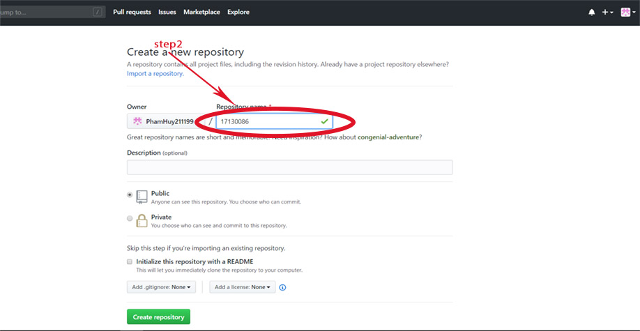

Create a repository on Github:
Log into Github , then click the + on the menu and select
New repository

You will need to name your repository. You can choose the type of repository as Public
(anyone can clone) and Private (only authorized people can clone).

Once created, it will lead you to the manual page for working with the newly created repository. And your repository will now have the address as
https://github.com/$user-name/$repository,
for example https://github.com/PhamHuy211199/17130086.git
Your job now is to clone this repository to your computer by command git clone địa_chỉ.
$ git clone https://github.com/thachphamblog/hoc-git
Cloning into 'hoc-git'...
warning: You appear to have cloned an empty repository.
Checking connectivity... done
Now go to the working tree folder (just clone repository) and try to create a file named README.md ,
then use the command git add to put this file into the Staging Area.
$ echo "# 17130086" >> README.md
$git init
$git add README.md
$git commit -m "first commit"
$git remote add origin https://github.com/PhamHuy211199/17130086.git
$git push -u origin master
However, after the commit is complete, the file that has been committed will still not appear in the Github repository, but you have to do one
more thing by using the command git push to push
the committed file to Github. Note that will need to enter your Github account and password .
$git remote add origin https://github.com/PhamHuy211199/17130086.git
$git push -u origin master
origin means the name of the remote (see next article) and the master name of the branch, these two I will explain more
in its own article. Now you can check your repository on Github.
Epilogue:
Now you know how to create a repository for Git? It's easy, right now, to make it easier for you to continue, let's create a reposity on your computer
and commit files,
or you can use Github to practice putting your code into the repository for be proficient.